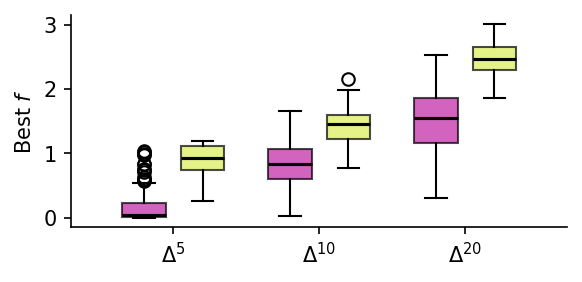
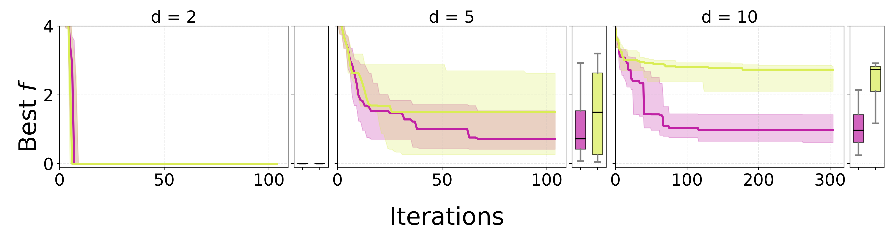
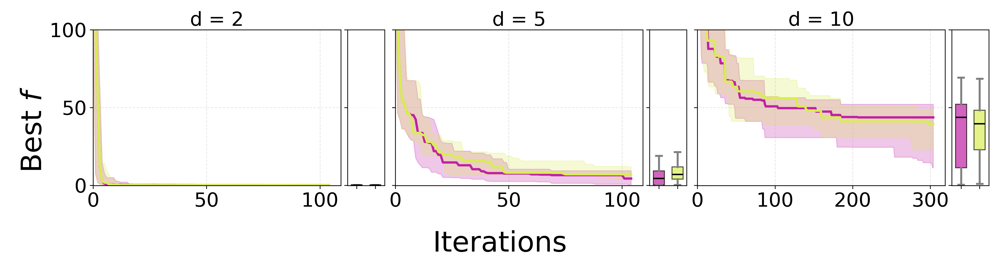

Introduction & Motivation
Optimizing over probability distributions naturally leads to the probability simplex $$\Delta^d = \left\{ \mathbf{p} \in \mathbb{R}^{d+1}_{\geq 0} \;\middle|\; \mathbf{p}^\top \mathbf{1} = 1 \right\},$$ which appears in Bayesian optimization, robotics, experimental design, and mixture modelling.
Under the $\alpha = -1$ information geometry, optimization becomes unconstrained in tangent space. However, the standard exponential map approaches the simplex boundary only asymptotically, making boundary solutions practically unreachable in finite time.
We resolve this fundamental limitation using the theory of astral spaces, extending both the geometry and the optimization dynamics continuously to the closed simplex $\overline{\Delta^d}$.
Main Contributions
- 1 We extend the $\alpha=-1$ information geometry of the probability simplex to the closed simplex, including all boundary faces.
- 2 We prove that the astral compactification of the tangent space is well-defined and continuous.
- 3 We derive an extended exponential map $\overline{\operatorname{Exp}}^{(-1)}$ enabling Riemannian optimization directly on the boundary.
- 4 We introduce Astral Riemannian Optimization and Astral $\alpha$-GaBO, a Bayesian optimization method that naturally identifies sparse, boundary-supported solutions.
Information Geometry at $\alpha = -1$
The core geometric objects for the $\alpha=-1$ exponential geometry are as follows.
| Object | Definition |
|---|---|
| Simplex | $\Delta^d = \bigl\{ \mathbf{p} \in \mathbb{R}^{d+1}_{\geq 0} \mid \mathbf{p}^\top \mathbf{1} = 1 \bigr\}$ |
| Tangent space | $\mathcal{T}_{\mathbf{p}}\Delta^d = \bigl\{ \mathbf{v} \in \mathbb{R}^{d+1} \mid \mathbf{v}^\top \mathbf{p} = 0 \bigr\} \cong \mathbb{R}^d$ |
| Fisher–Rao metric | $\langle \mathbf{v}, \mathbf{u} \rangle_{\mathbf{p}} = \displaystyle\sum_{i=1}^{d+1} p_i\, v_i\, u_i$ |
| Natural gradient | $\operatorname{grad}_{\mathbf{p}} F = DF(\mathbf{p}) - \mathbf{p}^\top\!\left[DF(\mathbf{p})\right]\,\mathbf{p}$ |
| Connection | $\nabla^{(-1)}_{\mathbf{U}}\mathbf{V}(\mathbf{p}) = \Bigl(\mathbf{p},\; D^2_{\mathbf{U}}\mathbf{V}(\mathbf{p}) + \mathbf{p}^\top\!\bigl[\mathbf{U}(\mathbf{p})\mathbf{V}(\mathbf{p})\bigr]\Bigr)$ |
| Exponential map | $\operatorname{Exp}^{(-1)}_{\mathbf{p}}(\mathbf{u}) = \dfrac{\exp(\mathbf{u})}{\mathbf{p}^\top \exp(\mathbf{u})}\,\mathbf{p}$ |
Astral Extension of the Tangent Space
The product structure of the exponential family allows us to compactify each component of the tangent space independently, yielding a tractable and geometrically natural extension.
Here $\overline{\exp}$ is the extension of the exponential to $\overline{\mathbb{R}}$, with the convention $\overline{\exp}(-\infty) = 0$.
Theoretical Results
We must show that the astral extension of $\mathcal{T}_{\mathbf{p}}\Delta^d$ exists and is unique. Observe that $$\mathcal{T}_{\mathbf{p}}\Delta^d = \ker(\ell_{\mathbf{p}}),$$ where $\ell_{\mathbf{p}} : \mathbb{R}^{d+1} \to \mathbb{R}$ is the linear functional $\ell_{\mathbf{p}}(\mathbf{v}) = \mathbf{p}^\top \mathbf{v}$. Since $\ell_{\mathbf{p}}$ is linear (hence convex), Theorem 7.4 of [1] guarantees that its astral extension to $\overline{\mathbb{R}}^{d+1}$ is unique and continuous. The compactified tangent space is therefore well-defined as $$\overline{\mathcal{T}_{\mathbf{p}}\Delta^d} = \bigl\{ \mathbf{u} \in \overline{\mathbb{R}}^{d+1} \mid \bar{\ell}_{\mathbf{p}}(\mathbf{u}) = 0 \bigr\},$$ where $\bar{\ell}_{\mathbf{p}}$ denotes the astral extension of $\ell_{\mathbf{p}}$. The product structure of $\overline{\mathbb{R}}^{d+1}$ yields the component-wise identification stated in the theorem. $\blacksquare$
It suffices to show that the extended geodesics $t \mapsto \overline{\operatorname{Exp}}^{(-1)}_{\mathbf{p}}(t\mathbf{u})$ are continuous for all $\mathbf{p} \in \overline{\Delta^d}$ and all $\mathbf{u} \in \overline{\mathcal{T}_{\mathbf{p}}\Delta^d}$, including directions with infinite components. Decomposing component-wise, the $i$-th entry of the extended map reads $$\bigl(\overline{\operatorname{Exp}}^{(-1)}_{\mathbf{p}}(\mathbf{u})\bigr)_i = \frac{\overline{\exp}(u_i)\,p_i}{\mathbf{p}^\top\overline{\exp}(\mathbf{u})}.$$
Each factor $u_i \mapsto \overline{\exp}(u_i)$ is convex and non-decreasing on $\overline{\mathbb{R}}$. The denominator $$\mathbf{p}^\top\overline{\exp}(\mathbf{u}) = \sum_{j=1}^{d+1} p_j\,\overline{\exp}(u_j)$$ is strictly positive: since $\mathbf{p} \in \Delta^d$ there exists at least one index $j$ with $p_j > 0$; the corresponding $u_j$ cannot equal $-\infty$ if $\mathbf{p}$ is in the interior, and on a boundary face the constraint $\mathbf{u} \in \overline{\mathcal{T}_{\mathbf{p}}\Delta^d}$ forces $u_j \in [-\infty, 0]$ with at least one $u_j > -\infty$, so the sum remains bounded away from zero. Hence every component is continuous on $\overline{\mathcal{T}_{\mathbf{p}}\Delta^d}$, and by Proposition 10.14 of [1] the full map is continuous in the astral topology. Well-definedness on boundary faces follows directly from $\overline{\exp}(-\infty) = 0$, which maps vanishing coordinates to zero probability mass. $\blacksquare$
Algorithms
- Compute the Riemannian gradient $\operatorname{grad}_{\mathbf{x}_t} F$ using the Fisher–Rao metric at the current iterate $\mathbf{x}_t$.
- Determine the descent direction $\mathbf{d}_t = -\eta\,\operatorname{grad}_{\mathbf{x}_t} F$ in the astral tangent space $\overline{\mathcal{T}_{\mathbf{x}_t}\Delta^d}$.
- Retract via the extended exponential map: $\mathbf{x}_{t+1} = \overline{\operatorname{Exp}}^{(-1)}_{\mathbf{x}_t}(\mathbf{d}_t)$.
- Set $\mathbf{x}_t \leftarrow \mathbf{x}_{t+1}$ and repeat until convergence.
The retraction step naturally reaches the boundary whenever the gradient direction acquires an infinite astral component, making sparse boundary solutions reachable in finite iterations.
- Fit a Riemannian GP surrogate on the current observation set $\mathcal{D}_t$.
- Optimize the acquisition function via natural-gradient descent using $\overline{\operatorname{Exp}}^{(-1)}$ as the retraction (Algorithm 1).
- Evaluate the black-box objective at the returned point $\mathbf{x}_{t+1}$ (which may lie on the boundary of $\Delta^d$).
- Update $\mathcal{D}_{t+1} \leftarrow \mathcal{D}_t \cup \{(\mathbf{x}_{t+1}, f(\mathbf{x}_{t+1}))\}$ and iterate.
Experimental Results
We validate on two complementary settings, in both cases placing the global optimum on the boundary of $\Delta^d$.
Riemannian gradient descent
Astral Riemannian gradient descent is compared against projected gradient descent on differentiable convex functions with boundary optima. Objective: Euclidean distance to the optimum raised to $3/10$, dimensions $d = 5, 10, 20$.
Astral $\alpha$-GaBO
Bayesian optimization on Ackley and Rosenbrock benchmark functions with boundary optima. Convergence curves report median, $q_{25}$, and $q_{75}$ over 25 independent runs, in dimensions $d = 5, 10, 20$.

Astral Riemannian vs. Euclidean constrained boxplots. Lower is better. Astral Riemannian optimization converges significantly faster across all dimensions.

Convergence curves for the Ackley function in dimensions $d = 5, 10, 20$. Astral $\alpha$-GaBO consistently identifies the boundary optimum. Lower is better.

Convergence curves for the Rosenbrock function in dimensions $d = 5, 10, 20$. Lower is better.
References
- 1 Dudík, M., Schapire, R. E., Telgarsky, M. Astral space: Convex analysis at infinity. arXiv:2205.03260 (2025).
- 2 Pavesi, F., Candelieri, A., Jaquier, N. Information theoretic Bayesian optimization over the probability simplex. 42nd Conference on Uncertainty in Artificial Intelligence. arXiv:2603.09793 (2026).